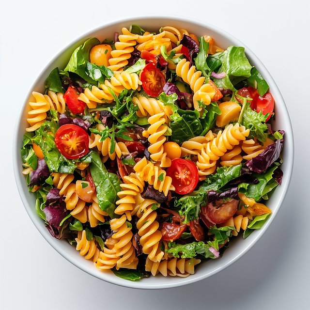

Pasta Salad
Home

Description
Pasta salad, known in Italian as insalata di pasta or pasta fredda, is a dish prepared with one or more types of pasta, almost always chilled or room temperature,
and most often tossed in a vinegar, oil or mayonnaise-based dressing.
It is typically served as an appetiser or first course.
Ingredients
- Pasta (Preferrebly penne)
- Cucumber
- Tomatoes
- Lettuce
- Olives
- Carrots
- Mayonnaise
- Cheese
Steps
- Cook pasta according to instructions of packaging
- Wash vegetables
- Chop vegetables to your preferred size
- Add to large bowl
- Once pasta is cooked, strain and leave to cool
- Grate cheese then add to bowl
- Mix
- Once pasta is cool, add to bowl
- Mix
- Add Mayo, salt and pepper
- Mix
- To preserve, leave in fridge
And there you have it, a simple, easy to make meal. Enjoy!